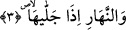

Kendi nuru ve taayyünü ile birlikte ilâhî hakîkatin nuru ve taayyünü ile bâkî olur. Öyle
ki defalarca, tekrar tekrar, ebedî ve sermedî olarak nûruna ve taayyününe bast ve irsâl
sûretiyle mazhariyyet-kesretiyyet-farkiyyet-mukayyedlik mertebesinde hâsıl olan kevnî
firkat hâlinde ondan hiçbir eser fânî olmaz. Şemsî ve ilâhî nûrun kemal sınırına kadar
tedrîcen tecellîsi, ayda ve insân-ı kâmilde zuhûru sırasında her ikisinin bakâsı kemale
erer. Bu nurun tamamlık sınırına varıncaya kadar yine tedrîcen her ikisinden gizlenmesi
ve kaybolması sırasında her ikisinin fenâsı tamamlanır. O ikisinin bu şekilde fenâsı
noksanlardan münezzeh olan Hakk’n celâlinin kabzındandır. Yine bu biçimde o ikisinin
bakâsı Allah Teâlâ’nın cemâlinin bastındandır. “Allah” devamlı olarak celâl ve
cemâlinin kemâli elleriyle zâtî kemalinin mertebesinden “kabz ve bast eder.” (el-
Bakara, 2/245). “Bilakis, O’nun iki eli de açıktır.” (el-Mâide, 5/64) “Hepsine,
onlara da bunlara da rabbinin lütfundan veririz. Rabbinin lütfu ihsanı kısıtlanmış
değildir.” (el-İsrâ, 17/20).” Şeyhimin (k.s.) sözü sona erdi.
Eğer: “Burada “izâ” şart edatı değildir. Çünkü lafzan veya takdiren cevabı yoktur.
Şartıye olmadığı için de onun üzerinde amel edip zarf olmamıştır. Şu halde bunun
mutlaka bir âmili olmalıdır. Bu âmil meşhur görüşe göre takdiren var kabul edilen “__WORD__
fiilidir. Bu fiil inşâîdir. Dolayısıyla hal içindir. “__WORD__” ise istikbal, yâni gelecek zaman
içindir. Dolayısıyla bu ikisi bir arada bulunamaz. Onun için zarf olmaz ve vakit
bildirmez.” dersen, ben şöyle cevap veririm: “İzâ” bu gibi yerlerde sebeb bildirmek
için gelmiştir. Yani ‘Ben ayın güneşi izlemesi îtibariyle aya, güneşi açığa çıkartması
îtibâriyle gündüze, güneşi örtmesi îtibariyle geceye yemin ederim.’ demektir. Bu ifâde
tıpkı “Sâlih ve mütedeyyin olman bakımından/sebebiyle seni buna şâhid tutuyorum.”
sözüne benzer. Nitekim bazı tefsirlerde böyle geçmektedir.
el-Kâmûs’ta der ki: “İzâ” yeminden sonra hal için gelebilir. “__WORD__ (el-Leyl,
92/1), “__WORD__ (en-Necm, 53/1) âyetlerinde olduğu gibi.
Bu durumda “__WORD__ (…dığı zaman)” mânâsına olur. Bil.
3. Onu açığa çıkarttığında gündüze,
“Onu” güneşi “açığa çıkarttığında” yâni zâhir ve âşikâr kıldığında “gündüze,”
Gündüz, gecenin karanlığını silerek yeryüzünün gölgesini ortadan kaldıran güneşin
ışığıdır. Çünkü güneş gündüzün yayıldığı ve açılmayı tam olarak elde ettiği zaman açığa
çıkar. Sanki güneşi ortaya çıkaran gündüzdür. Oysa güneş gündüzü yayandır. Yani
gündüzün yükselme zamanı olan eserin yayılması güneşin parlama zamanı olunca ve
parlama o vakitte meydana geldiği için açığa çıkartma fiili mecâzî bir isnâdla ona isnâd
edilmiştir. Tıpkı “Gündüzünü oruç tuttu.” İfadesinde olduğu gibi.